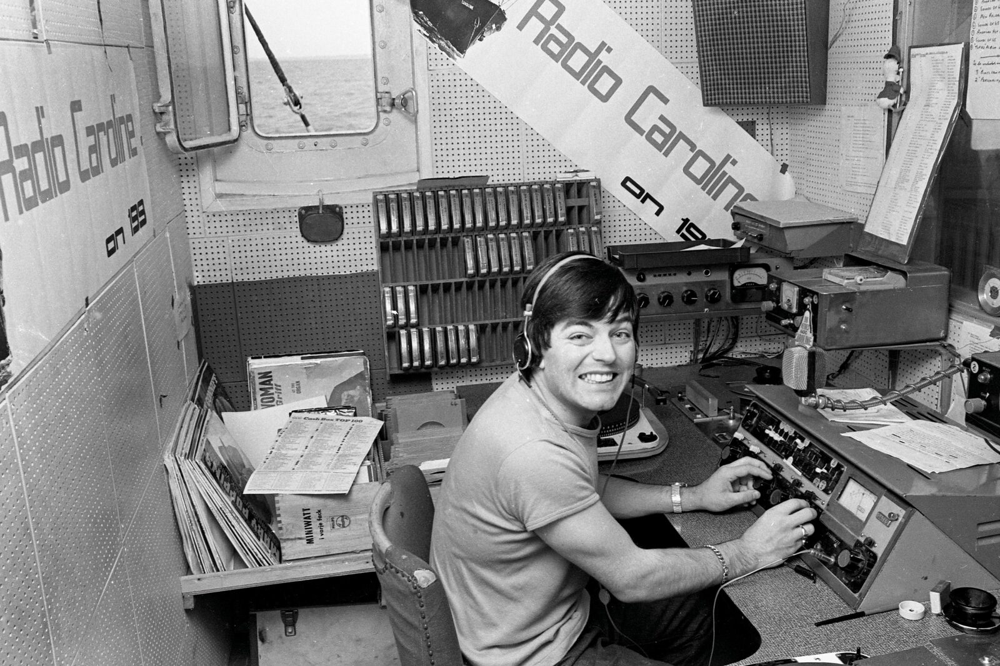
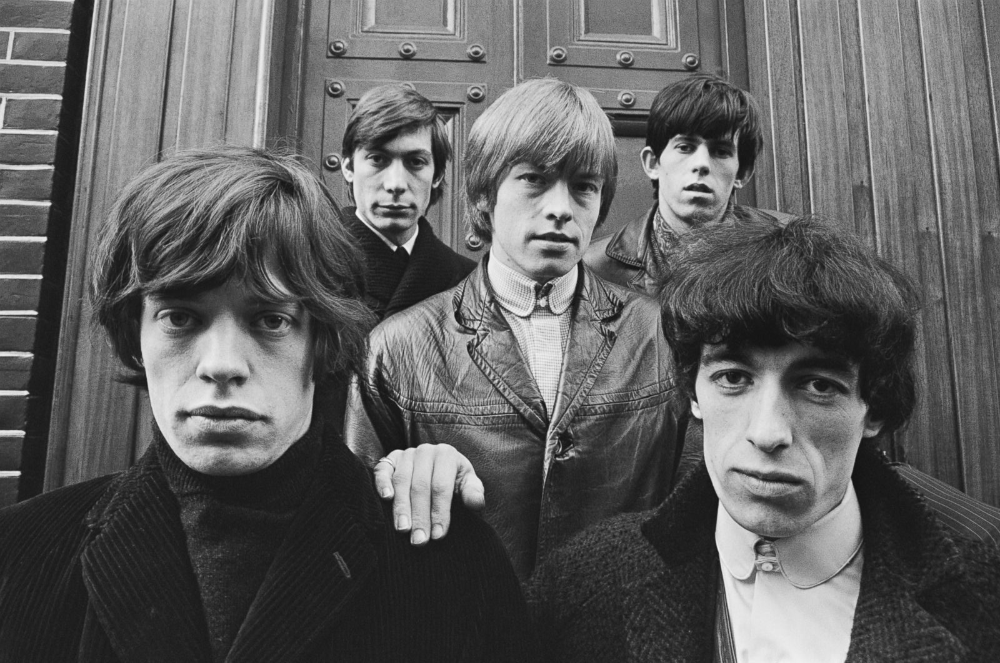
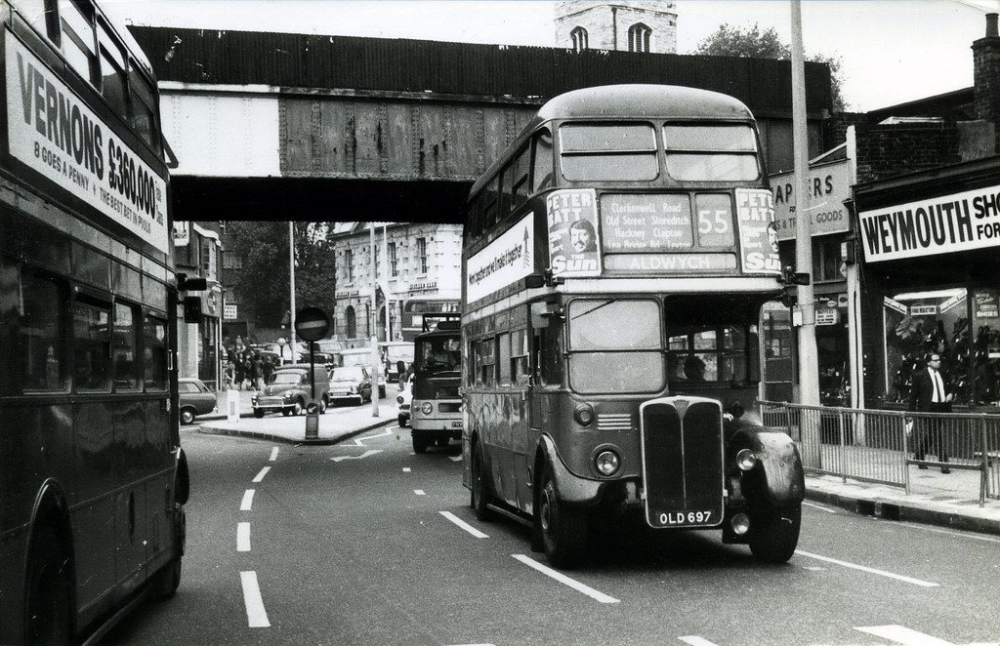
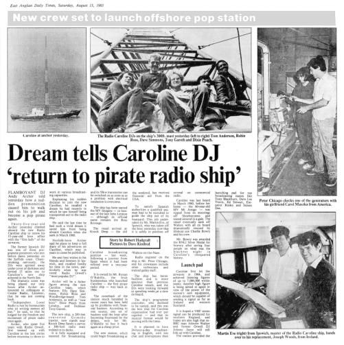
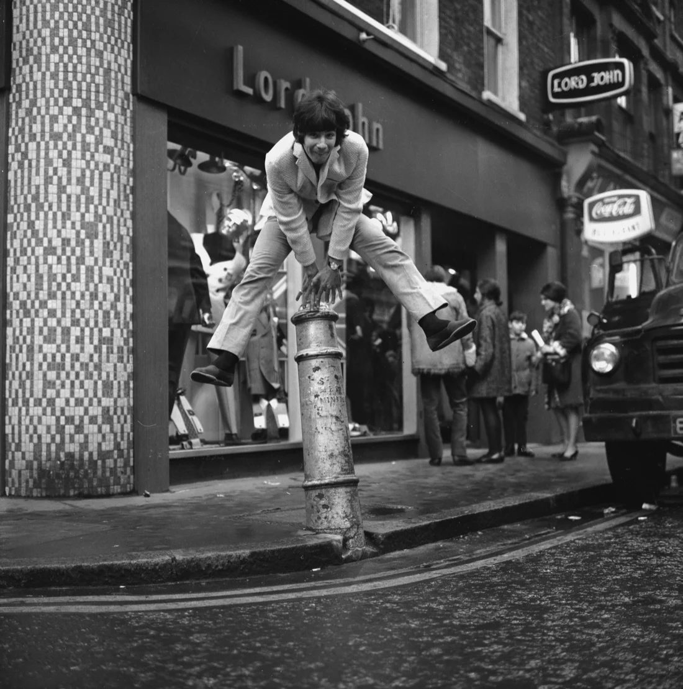
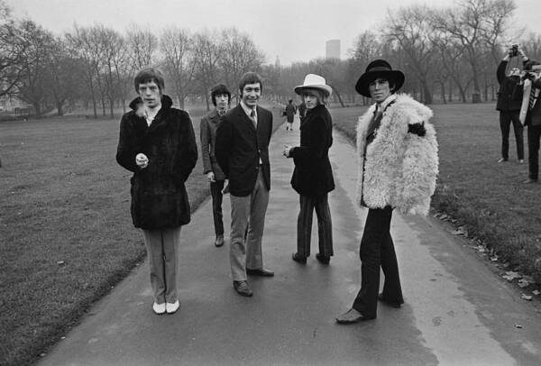
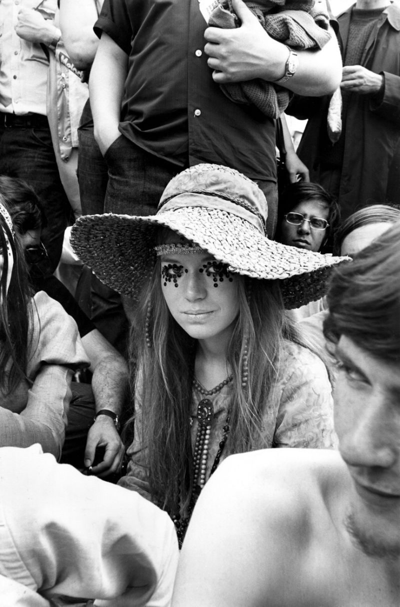

Il primo passo è acquisire una barca. La battezza con il nome di Caroline; omaggio alla figlia del presidente americano John Fiztgerald Kennedy.
Il secondo passo è quello di radunare una ciurma di “Pirati dj”. Insieme a loro non rimane altro che caricare la nave di giradischi e vinili e salpare al largo delle coste di Londra.
Lo studio radiofonico, galleggiante, ideato da O’Rahilly trasporta a bordo un innovativo sistema comunicativo — siamo in tempi dove il monopolio radiofonico è gestito unicamente da stazioni statali come la BBC — il quale permette di creare una valida alternativa di canali attrezzati alla distribuzione delle nuove sonorità della pop music:
Il ragazzotto ha 24 anni ed arriva dall’Irlanda. Si chiama Ronan O’Rahilly. Incarna quel classico, eccentrico, modo di fare che caratterizza i ragazzi della sua primavera: scanzonato e ribelle; artefice del repentino mutamento che viene a rispecchiarsi nei gusti degli ascoltatori radiofonici britannici durante gli anni 60’.

Libera e senza regolamentazioni. Domenica di Pasqua del 1964 Radio Caroline trasmette la sua prima trasmissione, in acque internazionali, lontano dalle coste dell’Essex; in libertà e non perseguibile dalla giurisdizione britannica. Il rock è la colonna sonora di questa stagione: “Not Fade Away” dei Rolling Stones è il brano di apertura del programma radiofonico.

Il clamore sociale lampante fin dai primissimi mesi, con milioni di ascoltatori che condividono le proprie giornate sintonizzati sulle frequenze musicali ed i contenuti di intrattenimento della “radio in mezzo al mare”.
Spinto dalle avvolgenti e taglienti voci di speaker come Tony Blackburn, Simon Dee e Dave Lee Travis, il network diviene talmente preponderante da costringere il governo a correre ai ripari.
Il 15 agosto 1967 entra in vigore la legge “Marine Offences Act” stabilendo l’illegalità delle attività delle radio pirata gestite da persone sotto la legislazione inglese. Il fenomeno, a seguito delle aggiornate politiche governative, perde vigore, causando repentine chiusure di numerose stazioni radiofoniche. Radio Caroline non è esclusa. “All you need is love” dei Beatles è la traccia che chiude il viaggio di Radio Caroline. Trasmessa nell’ultimo periodo di vita della nave, la canzone diventa manifesto generazionale per ascoltatori e i produttori del fenomeno radio pirata, ritrovando elementi specifici della nascente ragione sociale inglese.

Ronan O’Rahilly è un chiaro esempio delle nuove ambizioni, che fomentano l’animo dei giovani inglesi della working class durante gli anni 60’.
L’epicentro del cambiamento è Londra. Il fenomeno verrà definito con il nome di Swinging London. Una metamorfosi di stile, atteggiamento e linguaggio che trasforma rapidamente la tetra metropoli post bellica nell’espressione "dondolante" della nuova cultura britannica.
Carnaby Street, nel quartiere Soho, è il cuore pulsante di questa esibizione, in cui musica, arte e moda, orientano i gusti artistici, esportandoli in tutto il mondo.
I Rolling Stones, i Beatles, gli Who sono gli esecutori principali della rivoluzione musicale.


I loro brani stravolgono i canoni sonori del panorama discografico. La ribellione verso il sistema politico e la ricerca di libertà sessuale, guidati da uno spregiudicato senso di romanticismo, ottengono un immediato consenso, consentendogli di raggiungere in breve tempo i primi posti delle classifiche mondiali.
L’amore, l’utilizzo di sostanze e l’attrazione per la psichedelia si mischiano all’anima dissidente delle nuove coscienze giovanili, accompagnate da un riscontro mediatico che focalizzerà l’attenzione delle istituzioni sul fenomeno sociale. Impegno che sarà evidenziato in diversi episodi tra cui quello capitato a Mick Jagger e la sua compagna Marianne Faithfull, arrestati nella loro abitazione di Cheyne Walk per possesso di cannabis il 24 maggio 1968.

A dare colore ad una Londra grigia e cupa sono le menti artistiche della corrente della Pop Art. Eduardo Paolozzi, Richard Hamilton, David Hockney sono alcuni dei nomi che hanno attirato milioni di visitatori nei musei con le proprie esposizioni di opere d’arte.
La fotografia dell’universo artistico della Swinging London la cura David Bailey, scattattando copertine per i Rolling Stones o riviste come Vogue che allineano la moda al centro del rinnovamento culturale. Da ora in avanti indossare una minigonna, farsi un nuovo taglio di capelli, vivere nel modo di Jean Shrimpton, sarà il sogno di ogni ragazza del mondo.